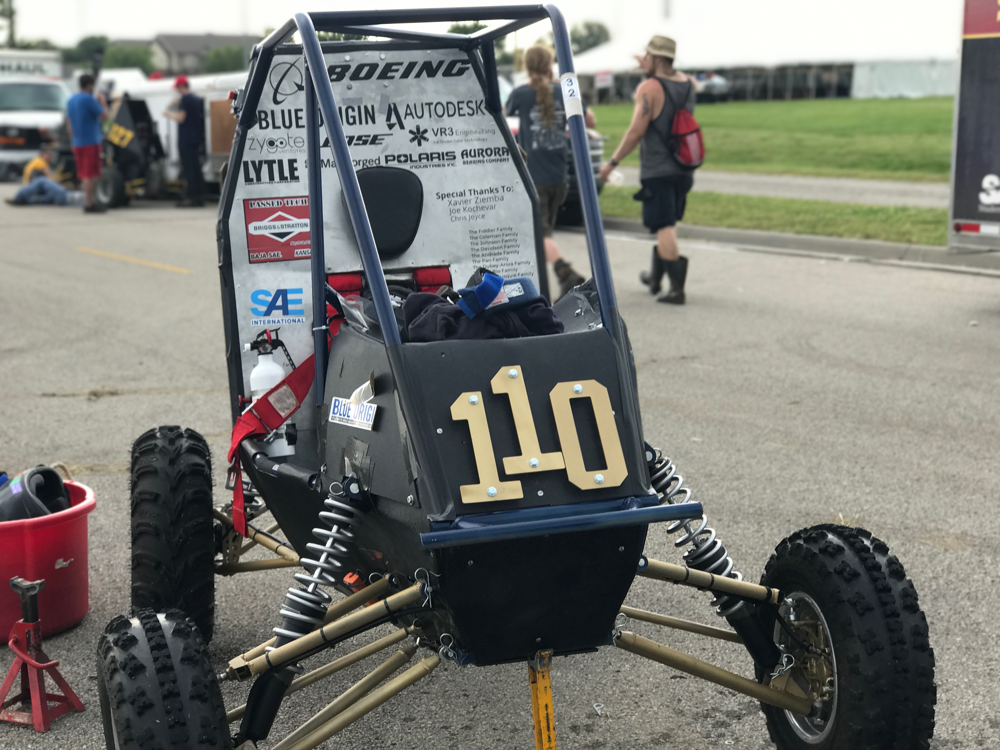

Olin Baja
Olin Baja is a student team from Olin College of Engineering. We compete in the intercollegiate Baja SAE design series, which involves designing, building, testing, and racing an off-road vehicle. Our team has 35 undergraduate students from all classes. We are an education-oriented team which provides members with long-term experience in an extensive, hands-on engineering project. We work on designing, manufacturing, testing, fixing, and even racing our vehicle! I am personally on the suspension team, where I have had experience with Solidworks and FEA simulations, suspension geometry design, machining on the mill and lathe, and welding.
I have been a member of Olin Baja since the beginning of my time at Olin, and worked on the team as part of the suspension subteam. I started as a first year student choosing what tires the team would be using for competition, researching different tread patterns and tire dimensions that would match our needs for a muddy track in Tennessee. I helped redesign our pedals for the car while factoring driver ergonomics, and learned to use a mill and lathe for the first time, machining parts for the car and eventually helping to build it.

As a sophomore I adopted more of a primary role on the suspension team. Rather than building a car from the ground up, we reused the same chassis and many of the same components for a second year. I worked on one of the two major suspension projects, redesigning the lower front suspension A-arm to be more durable. At competition in Tennessee the previous year, our car had several failures in our front, lower suspension arm at the connection between the arm and the knuckle on the wheel, where the stress concentration at the rod end caused it to snap in two, disconnecting the arm from the wheel. I worked alongside a teammate to redesign the A-arm to be sturdier. We decided to stop using rod ends on the lower arm and transition to a pressed swivel bearing.

We began sketching designs for a weldable structure at the bottom of the arm that would connect the tubes, shock absorber, and "sandwich" the bearing between two pieces of metal. Our design consisted of two metal plates and support structures cut on a water jet that would press the bearing into place in a part we would create on the lathe. We took the design through the FEA process, assuming a load equal to three times the weight of the car would be applied to the arm, which rests below the wheel and takes much more load than the upper A-arm. While the design was sturdy and not likely to fail, other metrics made the design less reliable. The design was adding considerable weight at the base of the wheel, it was difficult to weld, and would take time to weld. With neither of us trained in welding at the time, we laser cut the pieces and attempted to glue them together with a hot glue gun to understand the process better. We quickly realized that we needed to simplify our design, even if it sacrificed some durability.
In the second iteration of the design we moved away from the sandwiched metal design and decided to weld the swivel bearing housing directly to the tubes. We designed the mount for the shock absorber to be a plate that fit in between the tubes at the bottom of the A-arm. Overall our final design was more streamlined, easy to build, and nearly as durable as the original. The A-arm never broke during competition and my team ran our best 4-hour endurance race in the history of Olin.
As a junior this year I have worked with the team to better onboard first years and help them understand how we design systems on Baja, as we work to build an entirely new car this year. I worked with two first years to help orient them, helping them redesign the front suspension to fit our new geometry design. Additionally, I have had the opportunity this year to lead the design of our rear suspension geometry with the help of our team's suspension lead, deciding on our car's track width, camber gain with compression, positioning of our shock absorber, and several other variables. The task was a welcoming challenge. It was difficult to balance so many different variables, while at the same time forcing yourself to make tradeoffs between different performance factors, such as whether or not we should be optimizing for a given amount of camber gain with roll or a smaller track width. At the same time, I have been helping other first year students as they design the rear trailing arm to match the final design of our geometry.
My time on Baja has forced me to consider what factors are most important in the design of a part or system. We often optimize for speedy repairs during competition, but this can also come at the cost of other factors such as overall durability. I have learned to make tradeoffs and design for important factors such as weight, manufacturability, and durability. As part of a larger team, I have also learned how to communicate across subsystems, for example, making sure no gearbox members would interfere with our suspension design. Finally, working on Baja has provided the opportunity to see designs translated from concept to reality and played out in the real world, on the race track.